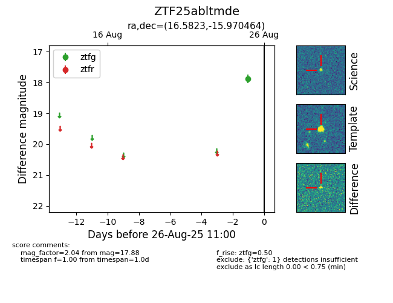

Target ZTF25abltmde at 2025-08-26 11:00, see:
FINK: fink-portal.org/ZTF25abltmde
Lasair: lasair-ztf.lsst.ac.uk/objects/ZTF25abltmde
ALeRCE: alerce.online/object/ZTF25abltmde
alt names
ZTF25abltmde (ztf,fink)
coordinates:
equatorial (ra, dec) = (16.5823,-15.97046)
galactic (l, b) = (140.8911,-78.31970)
photometry
last ztfg=17.88
1 ztfg detections
